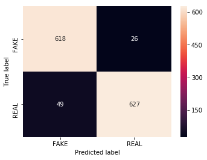

How is Fake News Identified?
Here we explain the various algorithms and modules that the system uses to classify Fake News
NLP Classifier
- Natural Language Processing (NLP) allows machines to break down and interpret human language.
- It’s at the core of tools we use every day – from translation software, chatbots, spam filters, and search engines, to grammar correction software, voice assistants, and social media monitoring tools.
- Natural Language Processing (NLP) is a field of Artificial Intelligence (AI) that makes human language intelligible to machines.
- Our problem here is to define whether or not a certain news article is fake news. The dataset used is comprised of 3997 news articles each includes a title, text, and the target label as a REAL/FAKE binary label.
The accuracy score of cross validation testing within the training dataset was 94%.

Confusion Matrix
Text Preprocessing
It involves the following :-
- Lowercase the text: This preprocessing step is done so words can later be cross checked with the stopwords and pos_tag dictionaries.
- Remove words with just one letter
- Remove words that contain numbers
- Tokenize the text and remove punctuation
- Remove stopwords: Proper analysis of text usually relies on the most recurring words. Stopwords including words as “the”, “as” and “and” appear a lot in a text, but eech word doesn’t really give relevant explanation, so one of NLP comon practices is to remove such words.
- Remove empty tokens: After tokenization, we have to make sure all tokens taken into account contribute to the label prediction.
- Lemmatize the text: In order to normalize the text, we apply lemmatization. In this way, words with the same root are processed equally e.g. when the words “took” or “taken” are found in the text, they are lemmatized to “take”, infinitive of the verb.
POS Tagging
Adding a prefix to each word with its type (Noun, Verb, Adjective,…). e.g: I went to school => PRP-I VBD-went TO-to NN-school
Also, after lemmatization it will be ‘VB-go NN-school’, which indicates the semantics and distinguishes the purpose of the sentence.
This will help the classifier differentiate between different types of sentences.

TF-IDF
- Term Frequency-Inverse Document Frequency is a numerical statistic that is intended to reflect how important a word is to a document in a collection or corpus
- The tf–idf value increases proportionally to the number of times a word appears in the document and is offset by the number of documents in the corpus that contain the word, which helps to adjust for the fact that some words appear more frequently in general. tf–idf is one of the most popular term-weighting schemes today
Pickle
- The pickle module implements binary protocols for serializing and de-serializing a Python object structure
- Pickling” is the process whereby a Python object hierarchy is converted into a byte stream, and “unpickling” is the inverse operation, whereby a byte stream (from a binary file or bytes-like object) is converted back into an object hierarchy.
Newspaper3K Library
- The Newspaper3k package is a Python library used for Web Scraping articles, It is built on top of requests and for parsing lxml.
- This module is a modified and better version of the Newspaper module which is also used for the same purpose.
- To install this module type the below command in the terminal.
- pip install newspaper3k